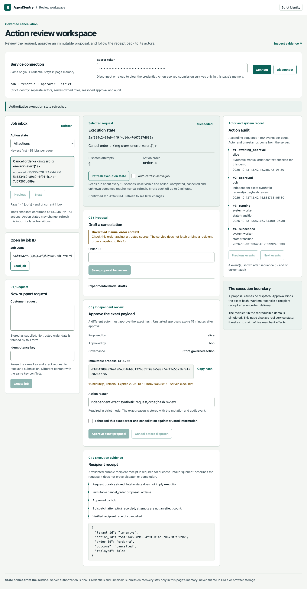

AgentSentry
An experimental cancellation draft becomes an effect only after independent approval under strict authentication. A worker crash must not turn one approved request into two cancellations.
19 October: hosted engineering baseline4964c3e remains verified. New single-candidate synthetic repair completes all156 computations within the scoring speed limit, but fails raw/permutation gates. The actual controller replay reaches143/144 exact effect decisions with zero unsupported allowed effects on these144 cases. No model is promoted; public backend deployment is not claimed.
System boundary
- 01Native operator → strict actor-scoped Go API
- 02PostgreSQL proposal, approval, audit and fenced lease
- 03Go worker → simulated SQLite order recipient
- 04Persisted receipt → restart reconciliation
The model proposes. Actor authority and the deterministic controller remain separate. The recipient is a simulator; audit immutability does not protect against a privileged database owner.

Data provenance: benchmark and demo
Synthetic customer requests and simulated order effects supply the current development evaluation and interactive engineering proof. Real PostgreSQL, APIs, authentication, workers and browser journeys execute those fixtures. No real customer-ticket corpus, production cancellation effect or independently validated model accuracy is claimed.
The failure worth demonstrating
The recipient commits a cancellation, then a proxy withholds its response. Kill the worker in that window. Restart the recipient and race replacement workers. They must reconcile the original receipt rather than invent success or perform another effect.
Why the backend is interesting
Tenant-bound idempotency protects intake; immutable proposal hashes bind approval. Under strict authentication, independent actor checks prevent self-approval. PostgreSQL leases fence stale local completion writes; the recipient contract separately handles duplicate effects. Expiry stops a first dispatch, while an already dispatched effect still needs reconciliation. An unknown result stays visible rather than being reset.
Model limitations · 19 October 2026
Pinned Qwen3-4B Q4_K_M completed the entire declared development campaign: 140 physical scoring requests including admission. Candidate A scored 29/54 raw exact (53.7%) with 8/9 consistent permutation groups; B scored 36/54 (66.7%) with 7/9 groups. Both retained 11/12 eligible targets. Maximum development scoring latency was 7.9724 seconds for A and 6.8811 seconds for B; worker cleanup passed. Neither met 90% raw accuracy and complete permutation consistency, so promotion was rejected and no confirmatory inference ran. Exact grammar scored 54/54 on this narrow development set. AI-authored references and earlier failures remain disclosed.
Controller evidence has a different denominator
Replaying each retained development output through the actual private controller produced 53/54 exact allowed-effect decisions, 11/12 eligible effects and zero unsupported allowed effects on these 54 synthetic cases. The existing rules provider with the same controller produced 48/54 exact effects and 6/12 eligible effects. Conservative controller vetoes explain much of this result; 53/54 is not raw model accuracy or a general safety guarantee. A promoted-candidate strict approval bridge was not run because neither model candidate qualified.
One-hour repair outcome · 19 October 2026
One new613-character prompt was frozen before scoring the previously unscored144-view synthetic benchmark. It completed156 physical computations including12 distinct offline calibrations; maximum scoring latency9.6973seconds with cleanup verified. Raw accuracy was121/144 (84.0%), eligible-effect recall23/24 and permutation consistency20/24 groups. Actual controller replay produced143/144 exact effect decisions and zero unsupported effects on these144 cases. The same keyword-rules/controller baseline produced120/144 exact effects,6/24 eligible effects and6 unsupported effects. These are distinct metrics, not a99.3% model-accuracy claim or a general safety guarantee. Raw/permutation acceptance failed, so promotion and the strict runtime bridge were blocked. All296 combined v8/v9 scoring computations are retained; no rerun followed. The model-free audit reproduced byte-for-byte from an archived source snapshot. References remain AI-authored and publicly exposed; independent validation is not claimed.
Scaling decision
Scale stateless API replicas separately from workers. PostgreSQL claims use bounded locking and lease versions. Measure completed effects, queue age, recipient latency and reconciliation failures before increasing concurrency. Existing intake timings establish intake behavior only; they are not action-completion capacity.
Reproduce the engineering proof
From the repository v2 directory, run the lightweight recipient-only demo with Python 3. The strict verifiers additionally require the documented Go, native PostgreSQL and Python/Playwright dependencies. Use unused output directories. Commit 5f113953 passed hosted Linux proof and the downloaded source/output audit. These commands use disposable synthetic data without Docker or model inference.
python3 scripts/recovery_demo.py
python3 scripts/verify_strict_execution.py --output validation/my-interview-strict-001
python3 scripts/verify_workspace_strict.py --output validation/my-interview-workspace-001
python3 scripts/verify_position_diagnostics.py --output validation/my-interview-diagnostics-001
python3 scripts/verify_completed_workload.py --output validation/my-interview-workload-001